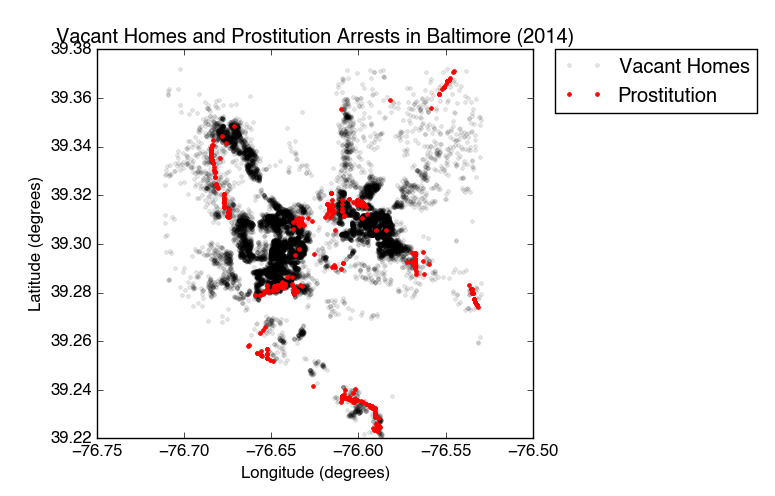
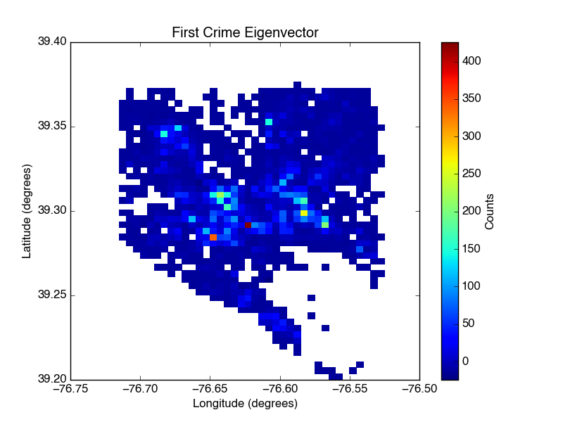

If you've ever spoken with an entrepreneur, you've likely heard them use the phrase "Location, location, location." While it may seem strange that such a simple, redundant phrase has a firm place in our lexicon, it makes sense when you consider the how strongly location impacts the success of a business, or the happiness of a homeowner. Numerous factors contribute to one's choice of location when considering a new storefront or a move to a new city. These may include, but are certainly not limited to:
As a student at The Data Incubator, I will develop a solution to the problem of location selection that will be primarily targeted at entrepreneurs and people moving to new cities. My product will take into account each individual user's most important factors and suggest areas in a target city that are the best suited to their criteria. This product will drastically narrow the user's location search, saving significant time and effort, and ultimately improve the user's prospects in their new location.
To realize this goal, I will first develop a robust method of collecting location-based data for major US cities from public sources. I will then develop a method of matching each user's criteria to available data and suggesting areas in the target city. As a proof of concept, I have collected two datasets for Baltimore city that are publicly available online. These datasets have remarkably high location-based resolution, which enables us to see areas that have particularly high numbers of vacant homes, and even areas in which a particular type of crime are concentrated:
As a first analysis, I created 2-dimensional histograms of arrests by violation type, and then used these histograms to identify specific crime "vectors" by principal component analysis. By projecting the raw data onto each of the four most important principal components, it is easy to see where a particular crime "vector" impacts the city most strongly, which is an area you might want to avoid:
Though analysis of crime data will only comprise a small portion of the project as a whole, principal component analysis and/or singular value decomposition will likely be an important part of this project, and may be especially helpful to produce quality recommendations for users whose dream locations must meet a high number of criteria.
While I'm enormously excited to work on this project, I currently lack the skills and resources necessary to bring it to completion. If accepted, I believe that the intense course of study at the Data Incubator will significantly improve my programming skills, give me a deeper understanding of data analysis and processing techniques, and ultimately give me the tools I need to develop a unique and valuable product.